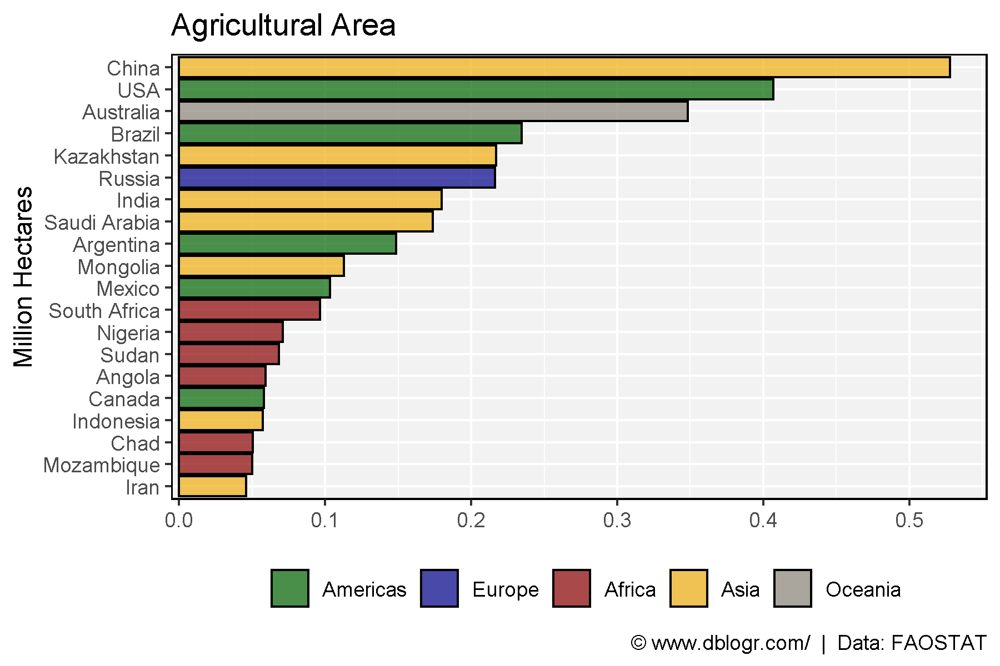
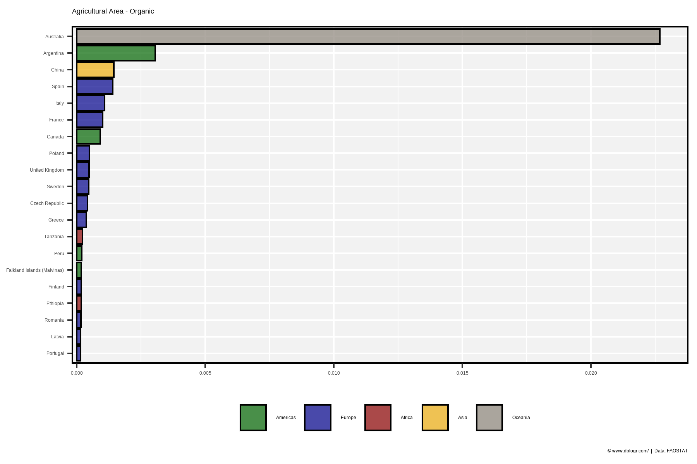
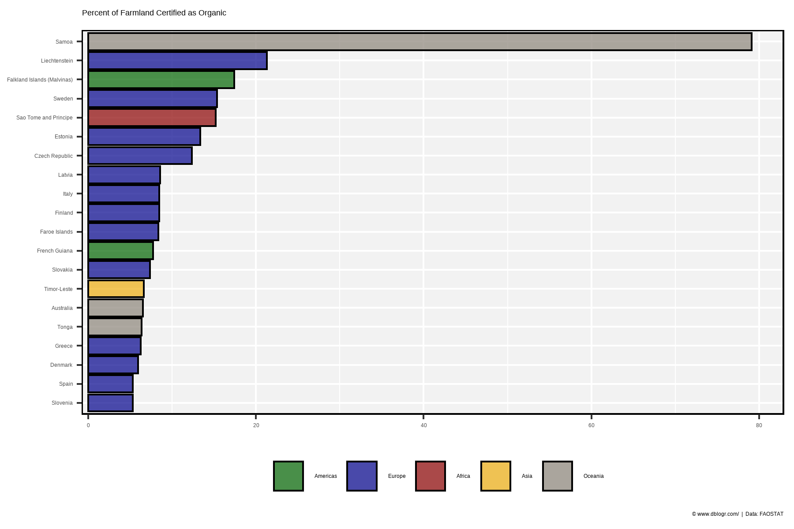
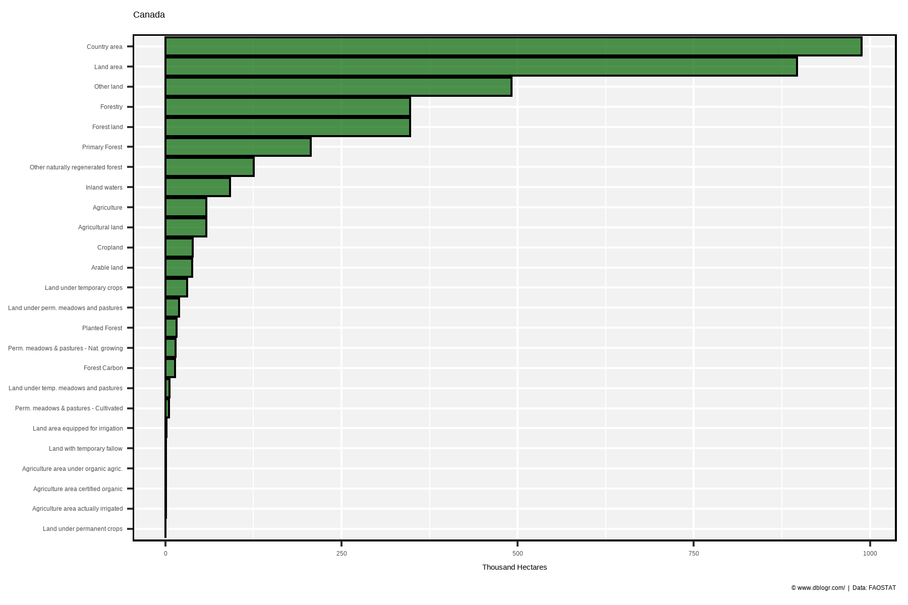

# devtools::install_github("derekmichaelwright/agData")
library(agData) # Loads: tidyverse, ggpubr, ggbeeswarm, ggrepel# Prep Data
colors <- c("darkgreen", "darkblue", "darkred", "darkgoldenrod2", "antiquewhite4")
xx <- agData_FAO_LandUse %>%
filter(Item == "Agricultural land",
Year == 2015) %>%
addRegionInfo() %>%
filter(Area %in% agData_FAO_Country_Table$Country) %>%
arrange(desc(Value)) %>%
slice(1:20) %>%
mutate(Area = factor(Area, levels = unique(Area)))
# Plot Data
mp <- ggplot(xx, aes(x = Area, y = Value / 1000000, fill = Region)) +
geom_bar(stat = "identity", color = "black", alpha = 0.7) +
scale_fill_manual(name = NULL, values = colors) +
scale_x_discrete(limits = rev(levels(xx$Area))) +
theme_agData(legend.position = "bottom") +
coord_flip(ylim = c(0.02, max(xx$Value) / 1000000)) +
labs(title = "Agricultural Area",
caption = "\xa9 www.dblogr.com/ | Data: FAOSTAT",
y = NULL, x = "Million Hectares")
ggsave("land_use_01.png", mp, width = 6, height = 4)
# Prep Data
colors <- c("darkgreen", "darkblue", "darkred", "darkgoldenrod2", "antiquewhite4")
xx <- agData_FAO_LandUse %>%
filter(Item == "Agriculture area certified organic",
Year == 2015) %>%
addRegionInfo() %>%
filter(Area %in% agData_FAO_Country_Table$Country) %>%
arrange(desc(Value)) %>%
slice(1:20) %>%
mutate(Area = factor(Area, levels = unique(Area)))
# Plot Data
mp <- ggplot(xx, aes(x = Area, y = Value / 1000000, fill = Region)) +
geom_bar(stat = "identity", color = "black", alpha = 0.7) +
scale_fill_manual(name = NULL, values = colors) +
scale_x_discrete(limits = rev(levels(xx$Area))) +
theme_agData(legend.position = "bottom") +
coord_flip(ylim = c(0.0009, max(xx$Value) / 1000000)) +
labs(title = "Agricultural Area - Organic",
caption = "\xa9 www.dblogr.com/ | Data: FAOSTAT",
y = NULL, x = NULL)
ggsave("land_use_02.png", mp, width = 6, height = 4)
# Prep Data
colors <- c("darkgreen", "darkblue", "darkred", "darkgoldenrod2", "antiquewhite4")
xx <- agData_FAO_LandUse %>%
filter(Item %in% c("Agriculture area certified organic", "Agricultural land"),
Year == 2015) %>%
select(-Measurement, -Unit) %>%
spread(Item, Value) %>%
mutate(Value = 100 * `Agriculture area certified organic` / `Agricultural land`) %>%
addRegionInfo() %>%
filter(Area %in% agData_FAO_Country_Table$Country) %>%
arrange(desc(Value)) %>%
slice(1:20) %>%
mutate(Area = factor(Area, levels = unique(Area)))
# Plot Data
mp <- ggplot(xx, aes(x = Area, y = Value, fill = Region)) +
geom_bar(stat = "identity", color = "black", alpha = 0.7) +
scale_fill_manual(name = NULL, values = colors) +
scale_x_discrete(limits = rev(levels(xx$Area))) +
theme_agData(legend.position = "bottom") +
coord_flip(ylim = c(3, max(xx$Value))) +
labs(title = "Percent of Farmland Certified as Organic",
caption = "\xa9 www.dblogr.com/ | Data: FAOSTAT",
y = NULL, x = NULL)
ggsave("land_use_03.png", mp, width = 6, height = 4)
# Prep Data
xx <- agData_FAO_LandUse %>%
filter(Area == "Canada", Year == 2015) %>%
arrange(desc(Value)) %>%
mutate(Item = factor(Item, levels = unique(Item)))
# Plot Data
mp <- ggplot(xx, aes(x = Item, y = Value / 1000)) +
geom_bar(stat = "identity", color = "black",
fill = "darkgreen", alpha = 0.7) +
scale_x_discrete(limits = rev(levels(xx$Item))) +
theme_agData(legend.position = "none") +
coord_flip(ylim = c(3, max(xx$Value) / 1000)) +
labs(title = "Canada",
caption = "\xa9 www.dblogr.com/ | Data: FAOSTAT",
y = "Thousand Hectares", x = NULL)
ggsave("land_use_04.png", mp, width = 6, height = 4)
© Derek Michael Wright www.dblogr.com/